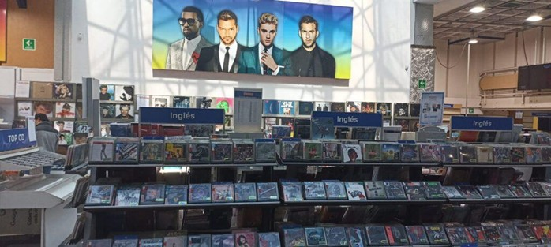
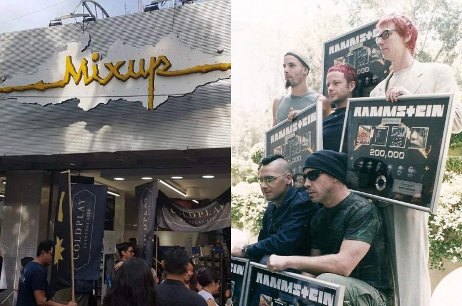
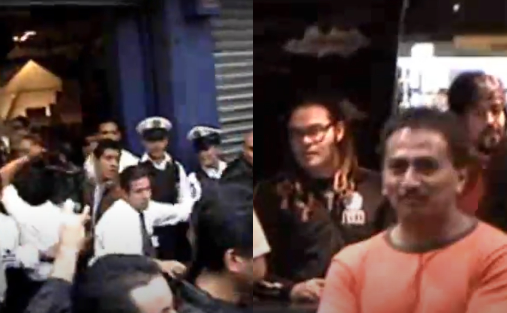
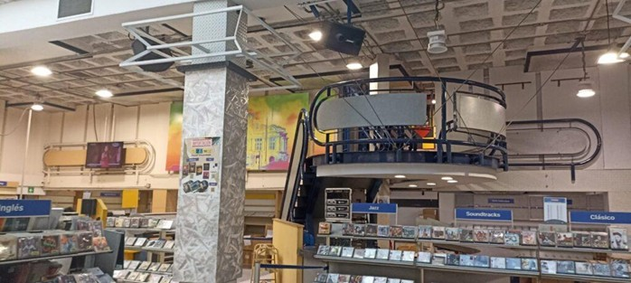

Hay lugares que llegan a ser relevantes en tu vida por la importancia que les das, aunque para muchos no lo hayan sido. Sin embargo, para quienes amamos la música, representaron un refugio único, un espacio donde pasamos momentos que ningún otro lugar nos daba.

Este es el caso de la tienda Mixup que se encuentra en la calle de Génova. Ahí recuerdo haber pasado muchas tardes explorando nuevos lanzamientos, descubriendo bandas que no conocía y sumergiéndome en la magia de la música física.

LEYENDAS QUE PISARON GÉNOVA
- PLACEBO / Rammstein
- KISS / Gustavo Cerati
- CAFÉ TACVBA (7,000 FANS)

Sin embargo, el paso del tiempo y los cambios en los hábitos de consumo han transformado la industria musical. Con la llegada de las plataformas digitales y la disminución de la compra de formatos físicos, Mixup ha tenido que adaptarse.

Como resultado, el cierre definitivo de su sucursal en Génova simboliza el fin de una era para quienes hicieron de ese espacio su refugio sonoro. La manera en que adquirimos música ha evolucionado, y con ello, la ciudad y sus lugares emblemáticos continúan cambiando.

A pesar de que Mixup seguirá operando con más de 40 sucursales en México, el cierre de Génova deja una huella imborrable en la memoria de sus visitantes.
GRACIAS, MIXUP GÉNOVA
POR TANTOS BUENOS MOMENTOS Y POR SER EL ORIGEN DE NUESTRAS COLECCIONES.